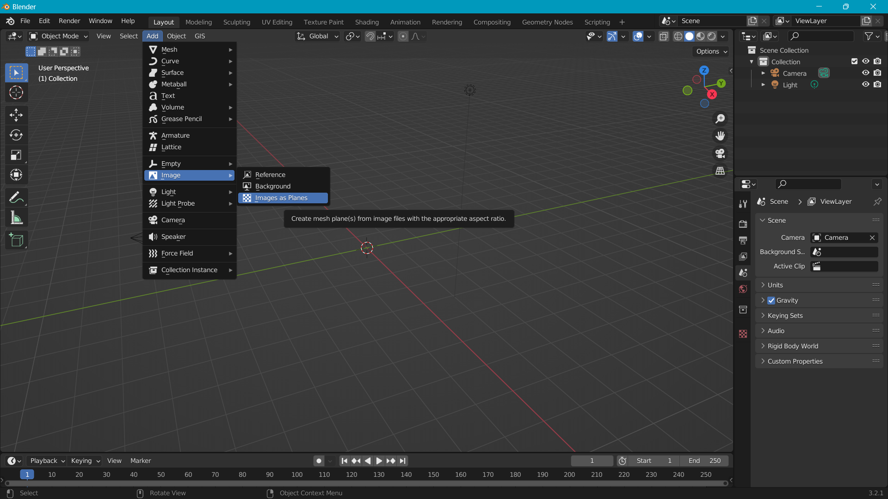
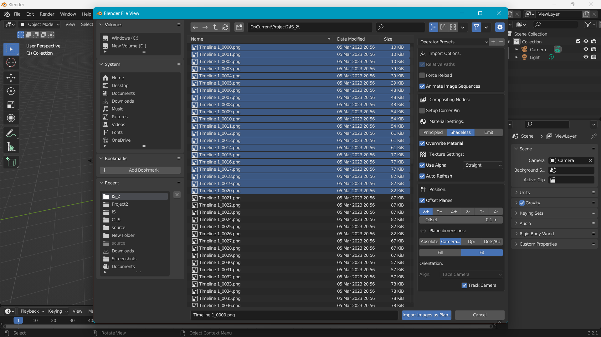
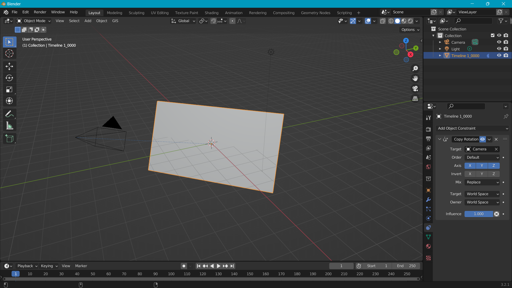
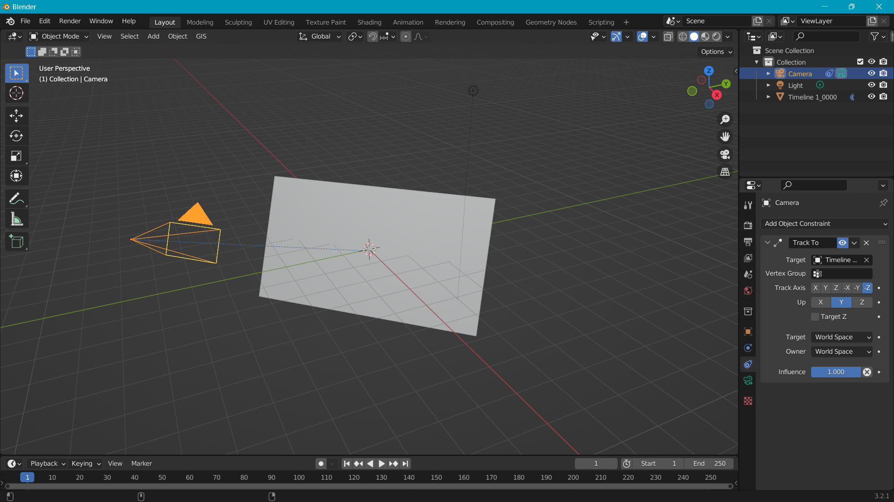

Introduction
Learning requires brains. and learning blender requires aquit lot of them. While working on a personal project RuBisCO realized he is seriously lacking some. In this article we are going to summerize one of many problems that RuBisCO encountered while working with blender for the first time. the problem can be encountered by following the following set of steps to achieve a specific result.
What Was RuBisCO Even Doing?
The aim of the project was to track a 2d plane (an image sequence) in 3d plane with camera using some constrains.
Step 1
RubicCO opens a new blender project. deletes the default cube. Now he needs to import an image sequence . to do that he uses a simple add-on 'import images as planes'.
While importing, he checks 'Animate Image Sequence', 'Shadeless', 'Camera Fit' and most importantly 'Track Camera'.
Step 2
He notices, the image seq has an object constrain 'Copy Rotation' with target set to camera.
Now he adds a 'Track to' constrain to camera with Timeline as its target
Seems to be working fine.

But Here's The Problem
He moves to Animation Panal and quickly animates the plane moving. But whats this? the camera is shaking.

It seems like the camera cant track or keep up with the moving palne.
Conclusion
This seems like more of a limitation than a bug as there is no way the camera can track the movement in real time. it calculates it at first and than proceeds to move.
But the major problem is that the lag persists even when we render the animation.
For now RuBisCO has found a workaround to this problem. He renders each frame one by one , Which gives the camera time to track the plane's movement.
Legend say that till this date he is still rendering his 20 second animation frame by frame.